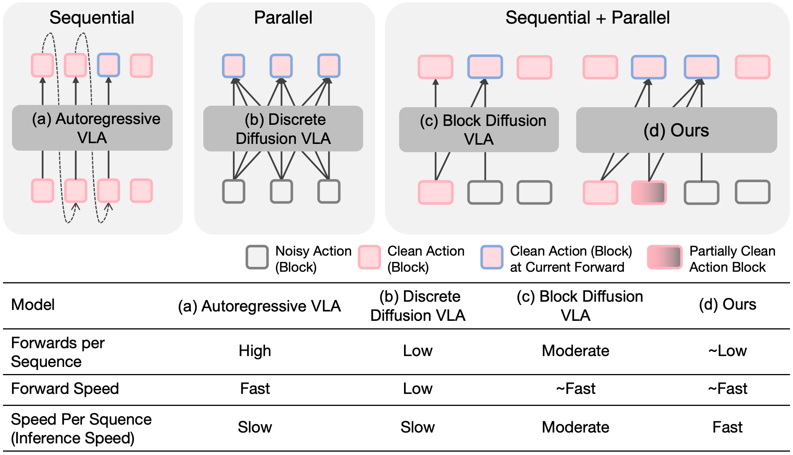
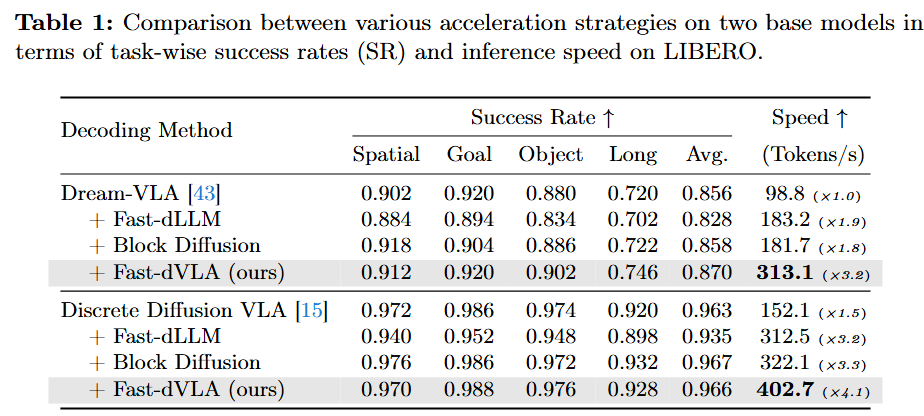
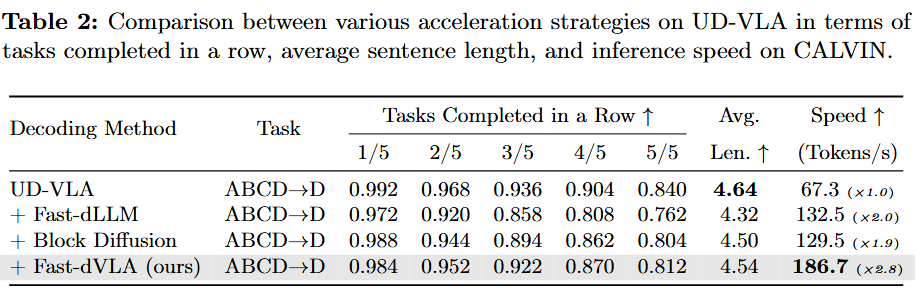
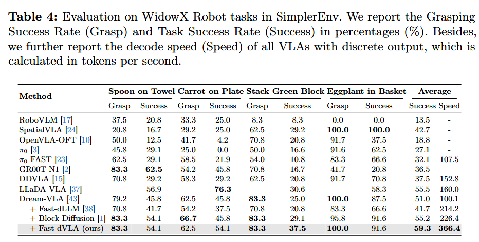
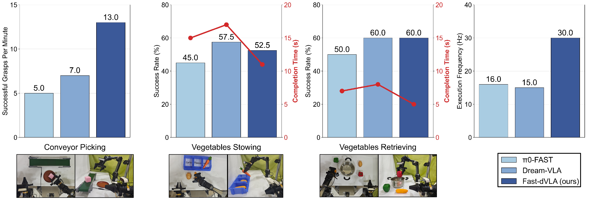

Accelerating Discrete Diffusion VLA to Real-Time Performance
A quick overview placed at the very beginning of the page.
Pretrained vision-language-action models with discrete diffusion decoding offer strong multimodal alignment, but their inference speed remains far below the real-time requirements of physical robots. Fast-dVLA addresses this bottleneck by accelerating discrete diffusion VLA models to real-time performance through a block-wise diffusion strategy that combines KV-cache reuse with inter-block parallel decoding.
The key idea is to exploit the implicit left-to-right, block-wise decoding tendency inside bidirectional dVLAs, then redesign the model with block-wise attention and diffusion forcing so completed blocks can be cached while later blocks continue denoising in parallel. To train this efficiently, the paper introduces asymmetric distillation from finetuned bidirectional dVLAs and a pipelined decoding algorithm for inference.
Across LIBERO, CALVIN, and SimplerEnv, Fast-dVLA delivers 2.8x-4.1x acceleration while preserving or slightly improving task performance. Real-world experiments further show robust execution across dynamic bimanual manipulation tasks with a stable 30 Hz control frequency.
Reveals that bidirectional dVLAs still decode with a block-wise left-to-right tendency.
Uses block-wise attention so completed blocks keep stable KV states across denoising steps.
Applies diffusion forcing to decode multiple action blocks with different noise levels in parallel.
Adopts asymmetric distillation and pipelined decoding to reach real-time robot control.
Block-wise diffusion, asymmetric distillation, and pipelined decoding

Even with bidirectional attention, representative dVLAs still denoise earlier action blocks before later ones, exposing an implicit block-wise autoregressive structure.
Fast-dVLA constrains attention to causal action blocks so once a block is fully decoded, its KV cache remains unchanged and can be reused efficiently.
Different blocks receive progressively increasing noise levels, allowing earlier blocks to finish first while later ones are refined in parallel without losing temporal consistency.
Asymmetric distillation transfers strong bidirectional teacher behavior into the block-wise student, and pipelined parallel decoding turns that structure into real-time inference.
Consistent acceleration on LIBERO, CALVIN, SimplerEnv, and real-world manipulation



The paper reports that Fast-dVLA keeps a stable 30 Hz control loop across all three real-world tasks, which prior baselines fail to maintain.

Each pair shows a baseline video and the corresponding Fast-dVLA result using your updated local assets.
Pick blocks from a moving conveyor belt and place them into the tray.
Reference behavior before Fast-dVLA acceleration.
Faster execution for dynamic picking under real-time control.
Sort vegetables into the container according to their text labels.
Slower execution with the original decoding pipeline.
Maintains semantic sorting while reducing completion time.
Retrieve a target vegetable and place it into the pot based on language instructions.
Reference retrieval behavior on the same task family.
Shows efficient instruction-following retrieval in the real world.
A second retrieval example showing another language-conditioned real-world rollout.
Additional comparison clip for the retrieval setting.
Second Fast-dVLA retrieval rollout from your local demo assets.
@misc{song2026fastdvla,
title = {Fast-dVLA: Accelerating Discrete Diffusion VLA to Real-Time Performance},
author = {Wenxuan Song and Jiayi Chen and Shuai Chen and Jingbo Wang and Pengxiang Ding and Han Zhao and Yikai Qin and Xinhu Zheng and Donglin Wang and Yan Wang and Haoang Li},
year = {2026},
note = {Preprint},
howpublished = {Project PDF: fastd-arxiv.pdf}
}